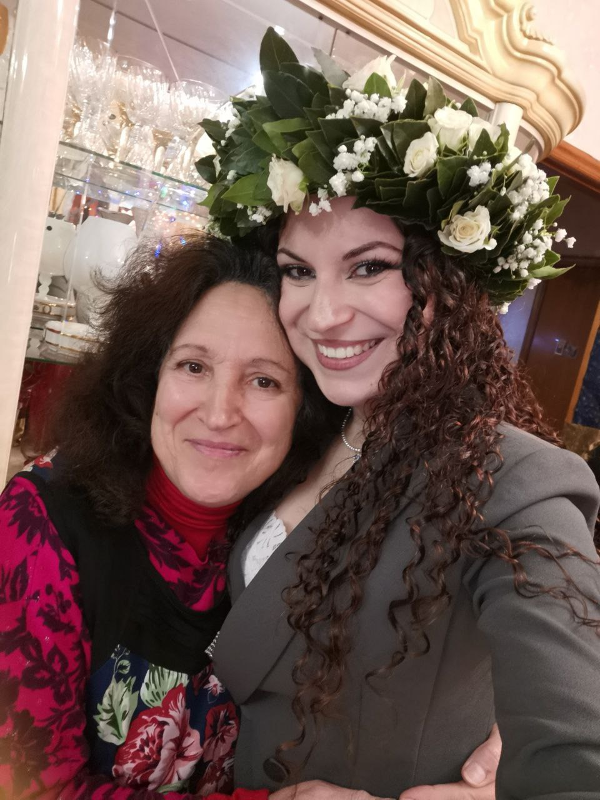
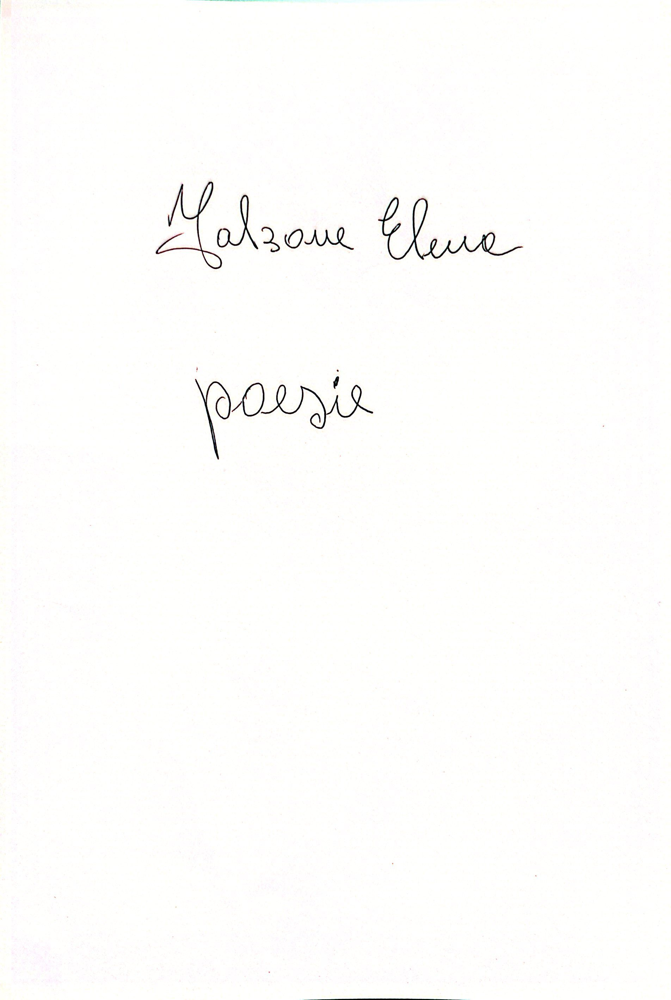
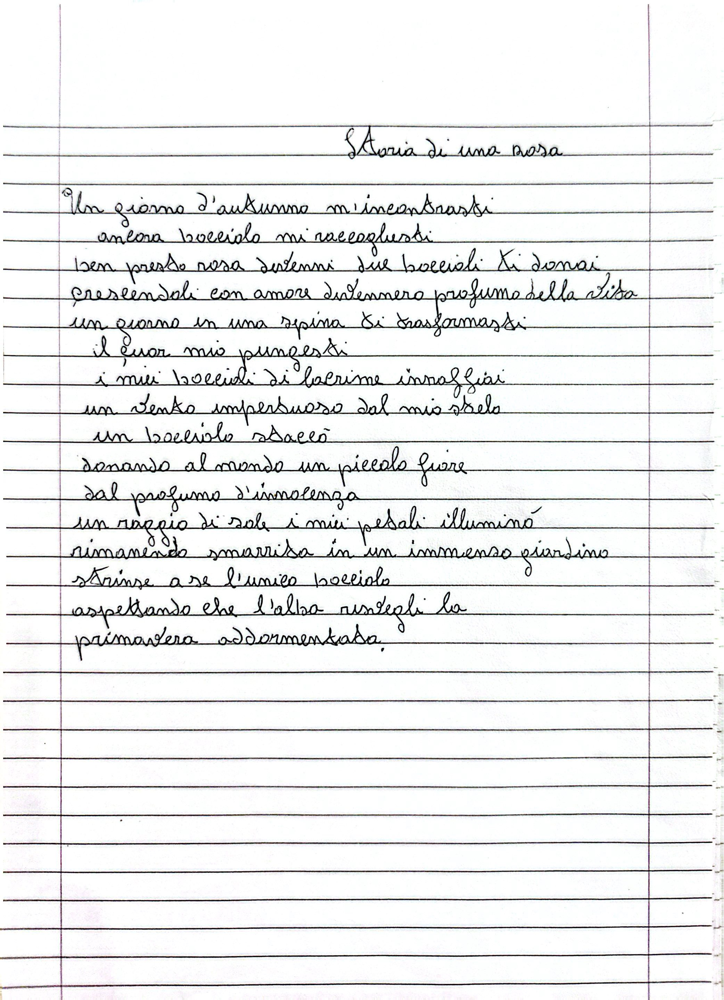
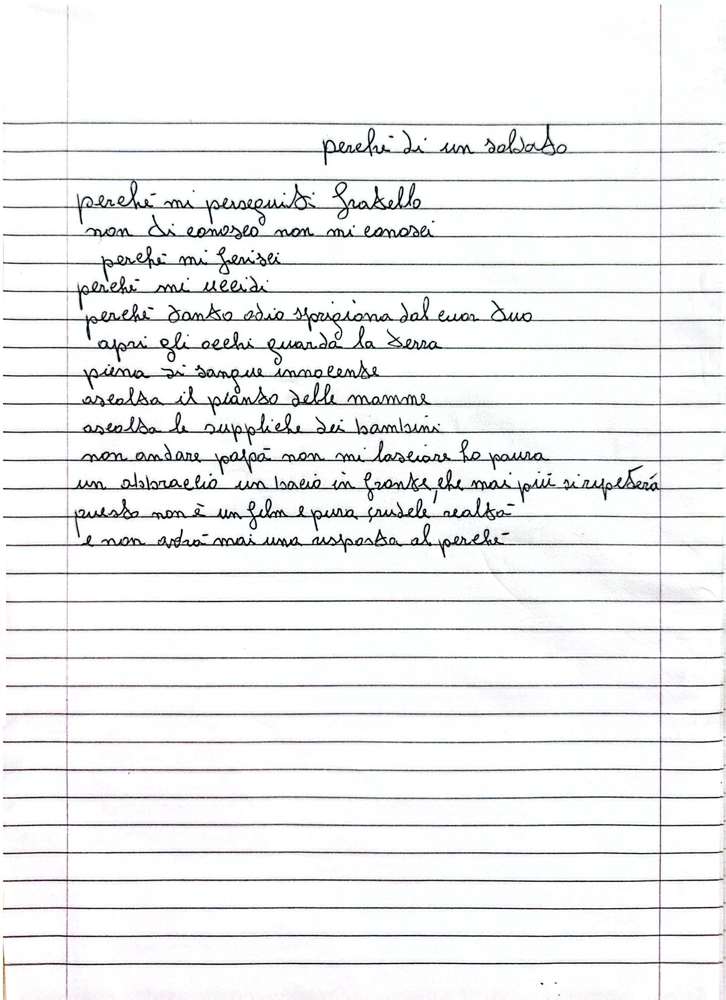
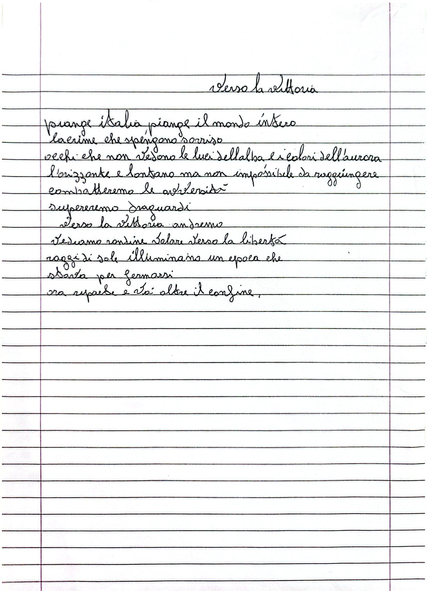
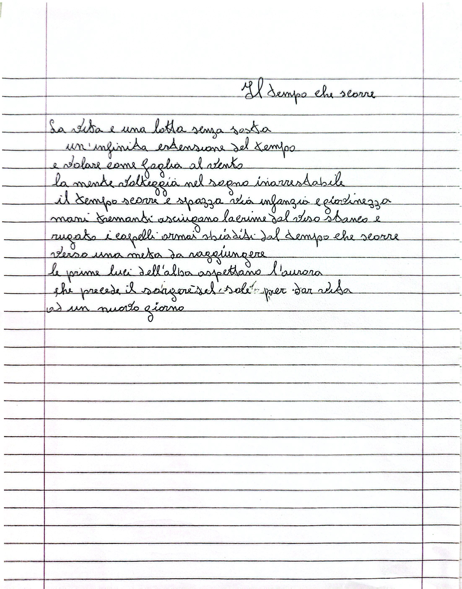
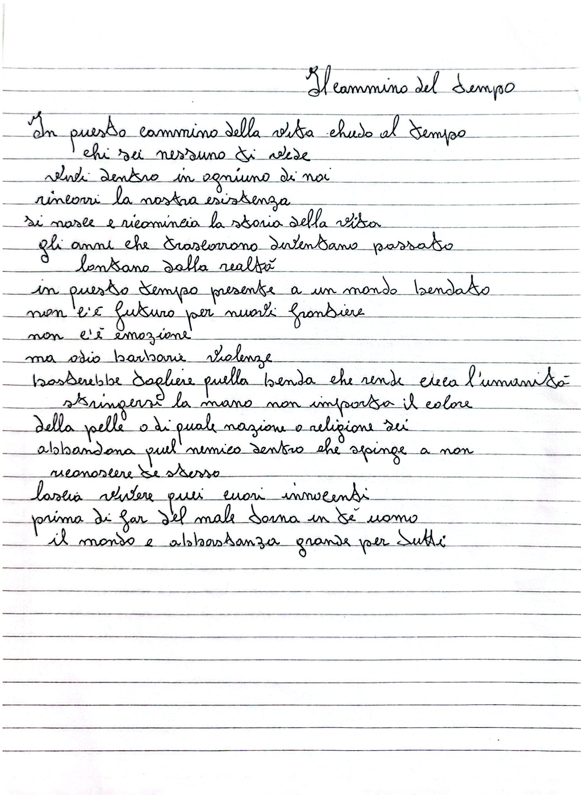

La mia passione per la scrittura nacque in quei lunghi pomeriggi d’estate trascorsi a casa di mia nonna Elena, che nell’anima ha sempre custodito il dono della poesia.
Ricordo che, da bambina, preferivo ascoltarla recitare i versi che scriveva piuttosto che giocare come gli altri. Fu proprio allora che si aprì davanti a me un nuovo universo.
Compresi che le parole possono fare molto più che descrivere la realtà: possono creare mondi, fermare i ricordi e dare forma ai sentimenti più profondi.
Crescendo, senza neppure accorgermene, ho continuato a ritrovare tra le parole lo stesso
incanto che lei mi ha insegnato.
Ho capito allora che
le parole
possiedono
un potere
innaturale: possono ucciderti o salvarti la vita.
A me, l'hanno
salvata.
Queste righe custodiscono le parole
che mi hanno teso la mano
quando tutto era silenzio,
le stesse che, oggi, lascio a voi
affinché possano parlarvi al cuore.
- Denise


Storia di una rosa
Un giorno d'autunno mi incontrasti,
ancora bocciolo mi raccogliesti
e ben presto rosa divenni.
Due boccioli ti donai,
crescendoli con amore,
divennero profumo della vita.
Un giorno in una spina ti trasformasti,
il cuor mio pungesti
e i miei boccioli di lacrime innaffiai.
Per un vento impetuoso,
dal mio stelo un bocciolo sbocciò,
donando al mondo un piccolo fiore
dal profumo di innocenza.
Un raggio di sole i miei petali illuminò,
pur rimanendo smarrita in un immenso giardino,
strinse a sé l'unico bocciolo,
aspettando che l'alba risvegli
la primavera addormentata.

Nell'ombra del passato
Vivo nell'ombra del passato,
tanta gente intorno eppure sono sola.
Tanto vociare eppure le mie orecchie non sentono,
tanto sole eppure ho freddo.
Cammino senza meta,
le orme seguono la mia ombra,
eppure la mia anima è viva.
Seguo la strada del sentiero,
le mie membra sono stanche.
Mi addormento all'ombra del cespuglio,
mi resta il ronzio delle api,
vedo gli uccelli volare liberi.
Il mio cammino è nell'ombra.
Sono chiusa nel mio silenzio,
ma quanto rumore,
eppure basterebbe assaporare la dolcezza della vita,
seguire la luce
e raggiungere la porta del presente.

Perché di un soldato
Perché mi perseguiti, fratello?
Non ti conosco, non mi conosci.
Perché mi ferisci? Perché mi uccidi?
Perché tanto odio sprigiona dal cuor tuo?
Apri gli occhi,
guarda la terra piena di sangue innocente.
Ascolta il pianto delle mamme,
ascolta le suppliche dei bambini:
“Non andare, papà,
non mi lasciare,
ho paura.”
Un abbraccio,
un bacio in fronte che mai più si ripeterà.
Questo non è un film,
è solo pura e crudele realtà
e non avrà mai una risposta al perché.

Verso la vittoria
Piangi, Italia,
piange il mondo intero.
Lacrime che spengono sorrisi,
occhi che non vedono le luci dell'alba e i colori dell'aurora.
L'orizzonte è lontano,
ma non è impossibile da raggiungere.
Combatteremo le avversità,
supereremo traguardi,
verso la vittoria andremo.
Vediamo rondini volare verso la libertà,
raggi di sole illuminano un'epoca
che stava per fermarsi,
ora riparte e va oltre il confine.

Il tempo che scorre
La vita è una lotta senza sosta,
un'infinita estensione del tempo.
Volare come foglie al vento,
mentre la mente volteggia nel sogno inarrestabile.
Il tempo scorre e spazza via infanzia e
giovinezza,
mani tremanti asciugano lacrime dal viso stanco e rugato,
i capelli ormai sbiaditi dal tempo che scorre
verso una meta da raggiungere.
Le prime luci dell'alba aspettano l'aurora
che precede il sorgere del sole
per dar vita a un nuovo giorno.

Il cammino del tempo
In questo cammino della vita,
chiedo al tempo: chi sei?
Nessuno ti vede,
vivi dentro ognuno di noi,
rincorri la nostra esistenza:
si nasce e ricomincia la storia della vita.
Gli anni che trascorrono
diventano passato lontano dalla realtà.
In questo tempo presente,
un mondo bendato,
non c’è futuro per nuove frontiere.
Non c’è emozione,
ma odio, barbarie e violenza.
Basterebbe togliere quella benda
che rende cieca l’umanità,
stringersi la mano,
non importa il colore della pelle
o di quale nazione o religione tu sia.
Abbandona quel nemico dentro
che spinge a non riconoscere te stesso.
Lascia vivere quei cuori innocenti;
prima di far del male, torna in te, uomo.
Il mondo è abbastanza grande per tutti.